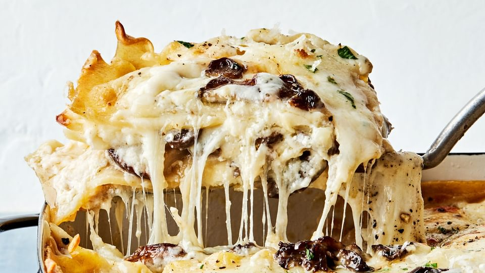

Lasagna

Dish descriprion
It starts with perfectly al-dente noodles layered with creamy, nutty bechamel, simply seasoned, golden brown mushrooms, and lots of cheese. Every single time we make this white lasagna recipe, we’re asked for the recipe. So, here it is! While it is a luxurious recipe, it isn’t too heavy: it’s comforting and cozy, yet the nutmeg and the mushrooms in the lasagna cut through the cheese for a fresh bite. We love this crowd-pleaser because in just about an hour and a half, you’ll have an easy, delicious meal fit for a family-style Sunday Dinner.
Ingredients
- Lasagna noodles
- Olive oil
- Mushrooms
- Kosher salt
- Shallots
- Garlic cloves
- Unsalted butter
- Flour
- Milk
- Nutmeg
- Cracked black pepper
- Creme fraiche
- Parmesan
- Mozzarella
- Whole-milk ricotta
- Fresh parsley
Steps
- Prepare the noodles! Bring a pot of water to a boil and salt it! Follow your lasagna noodle package according to the directions for al-dente noodles! This helps keep their shape and adds texture to your final dish! Pro Tip: Do not add oil to the noodles or the sauce won’t stick – when ready to assemble, simply run the noodles under warm water to separate them.
- Sauté the mushrooms!ver high heat, add oil. When it is glistening, add your mushrooms and do not touch
- Make the bechamel! a creamy, rich white sauce filled with hints of shallots and garlic. First, cook shallots, followed by garlic. Next, add in the butter and sprinkle with flour to create a roux! Slowly whisk in the milk (Pro Tip: it helps if there are two people, one to pour and one to stir!). Keep mixing until smooth, thick and creamy and no lumps are present, about 4 minutes! Add in the nutmeg and fresh cracked pepper, followed by the parmesan cheese and crème fraîche!
- Assemble! This part is a great way to get the kids involved. We start by laying down a base of bechamel sauce to hold the noodles in place. Then add the lasagna noodles, followed by more bechamel sauce, ricotta, mozzarella cheese, and mushrooms. Repeat 3 more times for a total of 4 even layers!
- Bake! Tent the aluminum foil (create space between the top of the foil and the cheese, so it doesn’t stick!) and bake for 30 minutes at 400°F (with a rack in the center position.) Uncover and bake for about 15 minutes until the top is golden brown and bubbly!
- Enjoy! Let the white lasagna sit for 5-10 minutes before serving. Top with freshly cracked black pepper, chopped parsley, and a sprinkle of parmesan cheese!